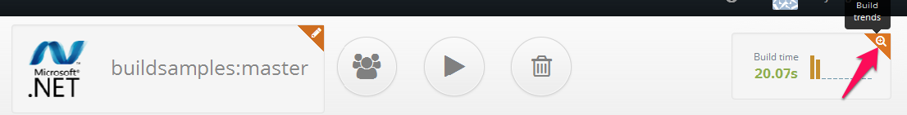

Reading reports :¶
You can see the console output appears on the window as the build proceeds.This log refreshes real time.The status of the build are also available on the window as the build proceeds execution like Queued , In progress , Success ,Failure and Unstable along with the build duration. Once the build finishes execution, the build artifacts are available as a .tar file. You can download this by clicking on the Download artifacts button.

Keep the test and code coverage outputs in our special folders called Shippable/testresults and Shippable/codecoverage to get the reports parsed. Then only you are able to check the Test and coverage reports as soon as the build finishes execution.
Windows worker will only archive the contents of the Shippable folder. So if you want to archive all the files in your repo, then you just need to keep everything in Shippable folder.
- Test - Testing is an activity to check whether the actual result is matching the expected result.Here you can check number of tests passed or failed in the build by clicking on the Test tab.
- Code coverage - To measure what percentage of code has been exercised by a test suite, one or more coverage criteria are used. Here you can check the Sequence coverage and branch coverage for each & every methods in a class ny clicking on the Coverage tab.

Build Trends
You can also check the Build trends like Build duration, Job health, repository size, file count, Unit test and code coverage in graphs by clicking on the Build trends button as shown in snapshot by an arrow.
- Build duration : Graph shows the amount of time taken to run the build. X-axis represents the number of builds and Y-axis represents the time taken run the build.
- Job health : Graph shows the number of builds run on each day. X-axis represents the days (Month and date) and Y-axis represents the number of builds ran.

- Repository size : Graph shows the size of your repository for each build . X-axis represents the number of builds and Y-axis represents the size of repository .
- File count : Graph shows the number of files in your repository . X-axis represents the number of builds and Y-axis represents the file count.

- Unit tests : Graph shows the number of tests passed or failed per method in each build. X-axis represents the number of builds and Y-axis represents the test results.
- Code coverage : Graph shows the sequence and branch coverage per method . X-axis represents the number of builds and Y-axis represents the sequence and branch covered per method.

- Console output and artifacts for previous builds for a job are available by clicking on the View another
build dropdown in the right pane.

- You can also browse the code on github using View on Github button next to the View another build button.